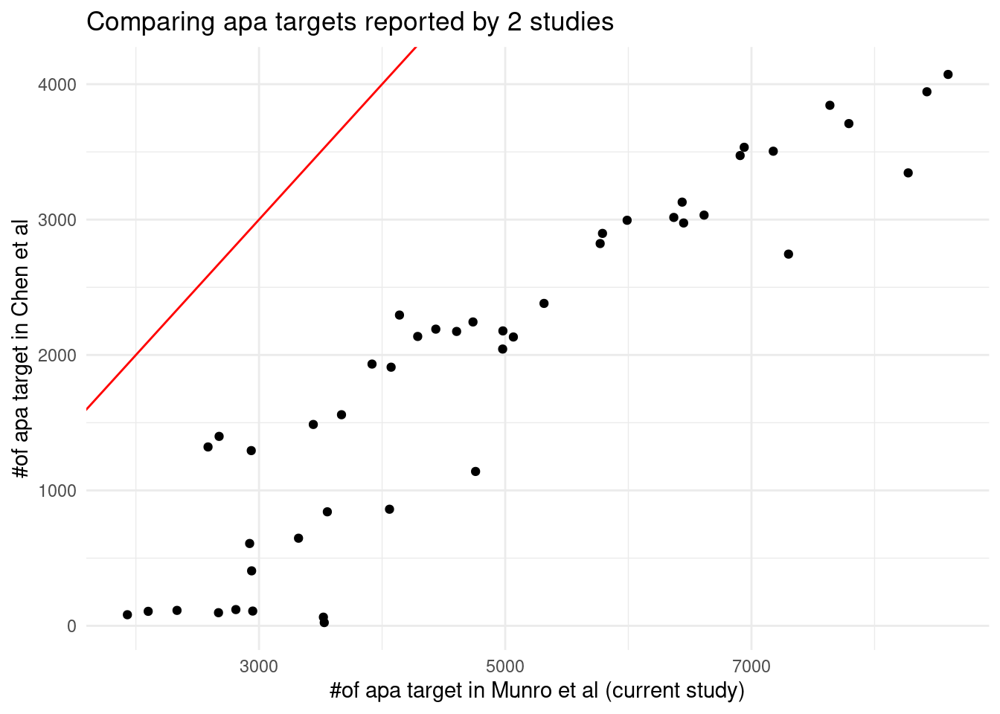

Last updated: 2024-06-13
Checks: 6 1
Knit directory: multigroup_ctwas_analysis/
This reproducible R Markdown analysis was created with workflowr (version 1.7.0). The Checks tab describes the reproducibility checks that were applied when the results were created. The Past versions tab lists the development history.
The R Markdown file has unstaged changes. To know which version of
the R Markdown file created these results, you’ll want to first commit
it to the Git repo. If you’re still working on the analysis, you can
ignore this warning. When you’re finished, you can run
wflow_publish to commit the R Markdown file and build the
HTML.
Great job! The global environment was empty. Objects defined in the global environment can affect the analysis in your R Markdown file in unknown ways. For reproduciblity it’s best to always run the code in an empty environment.
The command set.seed(20231112) was run prior to running
the code in the R Markdown file. Setting a seed ensures that any results
that rely on randomness, e.g. subsampling or permutations, are
reproducible.
Great job! Recording the operating system, R version, and package versions is critical for reproducibility.
Nice! There were no cached chunks for this analysis, so you can be confident that you successfully produced the results during this run.
Great job! Using relative paths to the files within your workflowr project makes it easier to run your code on other machines.
Great! You are using Git for version control. Tracking code development and connecting the code version to the results is critical for reproducibility.
The results in this page were generated with repository version 92a8e35. See the Past versions tab to see a history of the changes made to the R Markdown and HTML files.
Note that you need to be careful to ensure that all relevant files for
the analysis have been committed to Git prior to generating the results
(you can use wflow_publish or
wflow_git_commit). workflowr only checks the R Markdown
file, but you know if there are other scripts or data files that it
depends on. Below is the status of the Git repository when the results
were generated:
Ignored files:
Ignored: .Rhistory
Ignored: results/
Unstaged changes:
Modified: analysis/data_6modality_Munro.Rmd
Note that any generated files, e.g. HTML, png, CSS, etc., are not included in this status report because it is ok for generated content to have uncommitted changes.
These are the previous versions of the repository in which changes were
made to the R Markdown (analysis/data_6modality_Munro.Rmd)
and HTML (docs/data_6modality_Munro.html) files. If you’ve
configured a remote Git repository (see ?wflow_git_remote),
click on the hyperlinks in the table below to view the files as they
were in that past version.
| File | Version | Author | Date | Message |
|---|---|---|---|---|
| Rmd | 1a3f081 | XSun | 2024-06-05 | update |
| html | 1a3f081 | XSun | 2024-06-05 | update |
| Rmd | b4a73d9 | XSun | 2024-06-05 | update |
| html | b4a73d9 | XSun | 2024-06-05 | update |
library(ggplot2)
library(RSQLite)The data is from Multimodal analysis of RNA sequencing data powers discovery of complex trait genetics. It provides FUSION weights for gene expression, isoform ratios, splice junction usage, alternative TSS/polyA usage, and RNA stability.
dat_sum <- readxl::read_excel("/project2/xinhe/shared_data/multigroup_ctwas/weights/files_Munro/Munro_data_summary.xlsx")
DT::datatable(dat_sum,caption = htmltools::tags$caption( style = 'caption-side: left; text-align: left; color:black; font-size:150% ;','Table S1 from the paper: Counts of xGenes and xQTLs per GTEx tissue, modalities mapped separately'),options = list(pageLength = 10) )genes_expression_only: Number of genes with at least one cis-QTL for expression (cis-eQTL) and none for any other modality
genes_expression_and_others: Number of genes with at least one cis-QTL for expression and at least one for any other modality
genes_others_only: Number of genes with no cis-QTLs for expression and at least one for any other modality
genes_total: Number of genes with any cis-QTL, i.e. the sum of the previous three columns
genes_expression/isoforms/splicing/alt_TSS/alt_polyA/stability: Number of genes with at least one cis-QTL for expression/isoforms/splicing/alt_TSS/alt_polyA/stability
qtls_expression/isoforms/splicing/alt_TSS/alt_polyA/stability Number of conditionally independent cis-QTLs for expression/isoforms/splicing/alt_TSS/alt_polyA/stability
folder_weight_predictdb <- "/project2/xinhe/shared_data/multigroup_ctwas/weights/expression_models/"
files_predictdb <- list.files(path = folder_weight_predictdb, pattern = ".db")
folder_weight_munro <- "/project2/xinhe/shared_data/multigroup_ctwas/weights/Munro_expression_PredictDB/"
files_munro <- list.files(path = folder_weight_munro, pattern = ".db")
files_overlap <- files_predictdb[files_predictdb %in% files_munro]
tissue <- sub("expression_(.*?)\\.db", "\\1", files_overlap)
sqlite.driver <- dbDriver("SQLite")
gene_num_pred <- c()
gene_num_munro <- c()
overlap <- c()
for (i in 1:length(files_overlap)) {
file_pred <- paste0(folder_weight_predictdb,files_overlap[i])
db <- dbConnect(sqlite.driver,dbname = file_pred)
extra <- dbReadTable(db,"extra")
dbDisconnect(db)
genes_pred <- extra$genename
gene_num_pred <- c(gene_num_pred,nrow(extra))
file_munro <- paste0(folder_weight_munro,files_overlap[i])
db <- dbConnect(sqlite.driver,dbname = file_munro)
extra <- dbReadTable(db,"extra")
dbDisconnect(db)
genes_munro <- extra$genename
gene_num_munro <- c(gene_num_munro,nrow(extra))
num_overlap <- sum(genes_pred%in%genes_munro)
overlap <- c(overlap, num_overlap)
}
df_summary <- data.frame(
tissue = tissue,
num_gene_predictdb = gene_num_pred,
num_gene_munro = gene_num_munro,
num_gene_overlap = overlap
)
DT::datatable(df_summary,caption = htmltools::tags$caption(style = 'caption-side: left; text-align: left; color:black; font-size:150%; ', 'Number of genes in each data set and the number of overlaps'),options = list(pageLength = 5))load("/project2/xinhe/shared_data/multigroup_ctwas/weights/files_Munro/apa.stat.rdata")
colnames(sum) <- c("tissue","#of genes","average # of non-zero weights_lasso","average # of non-zero weights_enet")
DT::datatable(sum,caption = htmltools::tags$caption(style = 'caption-side: left; text-align: left; color:black; font-size:150%;'),options = list(pageLength = 5))Chen et al: https://sq-96.github.io/multigroup_ctwas_analysis/apa_weights_analysis_chenetal.html
dat_chen <- get(load("/project2/xinhe/shared_data/multigroup_ctwas/weights/apa.stat.rdata"))
dat_chen$tissue <- rownames(dat_chen)
load("/project2/xinhe/shared_data/multigroup_ctwas/weights/files_Munro/apa.stat.rdata")
overlap <- merge(sum,dat_chen, by="tissue")
ggplot(data = overlap, aes(x=ngene_alltissue.x, y=ngene_alltissue.y)) +
geom_point()+
geom_abline(slope = 1, intercept = 0, col="red") +
labs(x="#of apa target in Munro et al (current study)", y="#of apa target in Chen et al", title = "Comparing apa targets reported by 2 studies") +
theme_minimal()
sessionInfo()R version 4.2.0 (2022-04-22)
Platform: x86_64-pc-linux-gnu (64-bit)
Running under: CentOS Linux 7 (Core)
Matrix products: default
BLAS/LAPACK: /software/openblas-0.3.13-el7-x86_64/lib/libopenblas_haswellp-r0.3.13.so
locale:
[1] C
attached base packages:
[1] stats graphics grDevices utils datasets methods base
other attached packages:
[1] RSQLite_2.3.1 ggplot2_3.5.1
loaded via a namespace (and not attached):
[1] tidyselect_1.2.0 xfun_0.41 bslib_0.3.1 colorspace_2.0-3
[5] vctrs_0.6.5 generics_0.1.2 htmltools_0.5.2 yaml_2.3.5
[9] utf8_1.2.2 blob_1.2.3 rlang_1.1.2 jquerylib_0.1.4
[13] later_1.3.0 pillar_1.9.0 glue_1.6.2 withr_2.5.0
[17] DBI_1.2.2 bit64_4.0.5 readxl_1.4.0 lifecycle_1.0.4
[21] stringr_1.5.1 munsell_0.5.0 gtable_0.3.0 workflowr_1.7.0
[25] cellranger_1.1.0 htmlwidgets_1.5.4 evaluate_0.15 memoise_2.0.1
[29] labeling_0.4.2 knitr_1.39 fastmap_1.1.0 httpuv_1.6.5
[33] crosstalk_1.2.0 fansi_1.0.3 highr_0.9 Rcpp_1.0.8.3
[37] promises_1.2.0.1 scales_1.3.0 DT_0.22 cachem_1.0.6
[41] jsonlite_1.8.0 farver_2.1.0 fs_1.5.2 bit_4.0.4
[45] digest_0.6.29 stringi_1.7.6 dplyr_1.1.4 grid_4.2.0
[49] rprojroot_2.0.3 cli_3.6.1 tools_4.2.0 magrittr_2.0.3
[53] sass_0.4.1 tibble_3.2.1 whisker_0.4 pkgconfig_2.0.3
[57] rmarkdown_2.25 rstudioapi_0.13 R6_2.5.1 git2r_0.30.1
[61] compiler_4.2.0